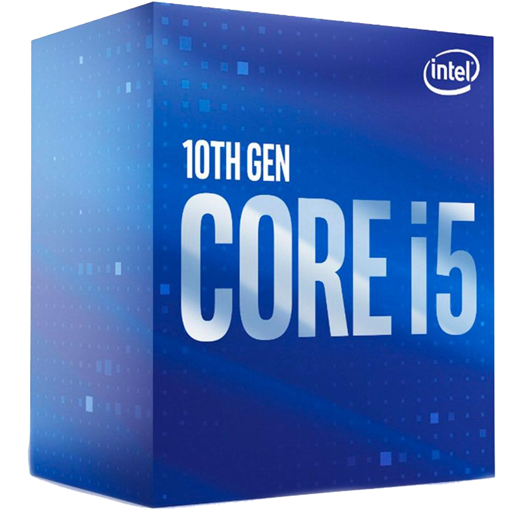
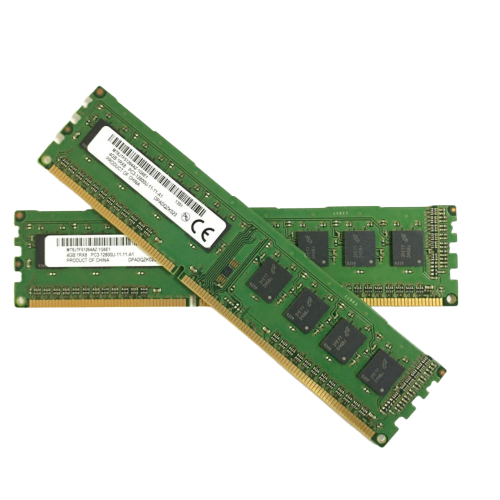

Maximize o seu desempenho seja trabalhando navegando ou assistindo o seu filme preferido com esse processador você pode tudo.
O suporte da Intel UHD Graphics 630 ao DirectX 11 e 12 significa que ela é capaz de rodar a maioria dos jogos modernos.
Tenha um ótimo desempenho com uma memória 3200MHz em sua máquina! Melhore sua experiência ao usar o computador, incluindo o aumento de fps para jogos e melhor performance para diferentes atividades.
Possuindo 10 entradas de conexão USB, a IPMH510G possui 4 conexões USB 3.2 gen1, permitindo acesso rápido com alta taxa de transferência de dados.
Com a fonte de alimentação ATX PS-G700M você terá mais qualidade para o seu PC. Ela possui 700 watts de potência real e certificação 80 Plus White.